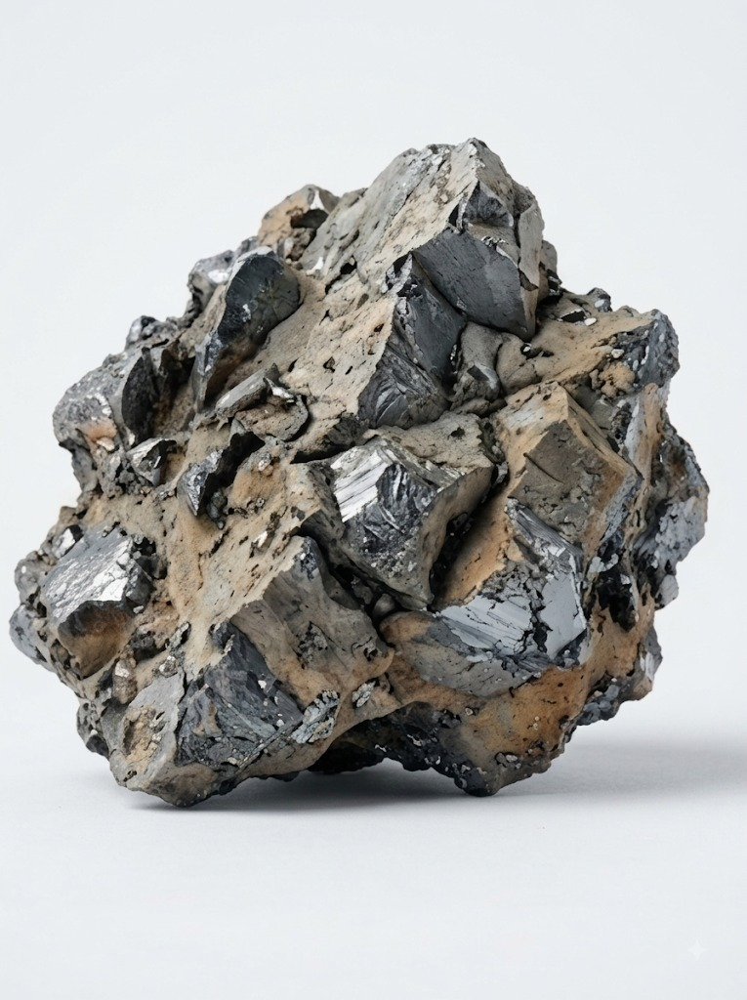
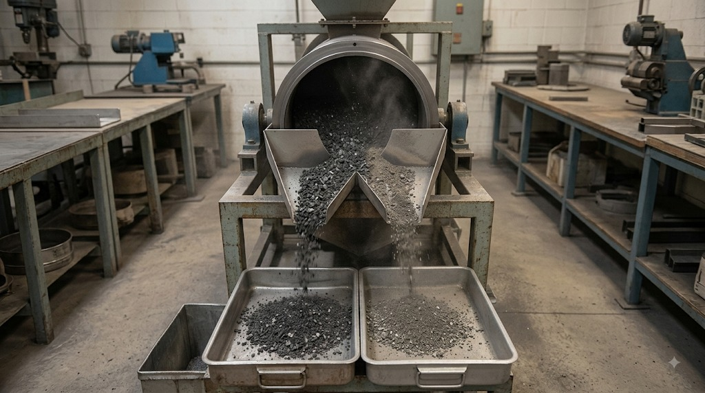

Magnetic separation is not a universal method and is effective only for ferromagnetic materials. In general metallurgical slags, part of the iron reports to the magnetic fractions, but a noticeable share stays in the non-magnetic tailings and requires repeated separation or magnetising roasting.
In ferroalloy production the situation differs: ferrosilicon prills have no magnetic properties, and manganese alloy prills occur in the fine fraction and separate poorly. In copper slags, a magnet recovers magnetite only and does not touch sulphide copper.
A frequent error is ignoring the degradation of the metal's magnetic properties during long storage of a dump. We do not propose a technology before we have seen data on the magnetic response of your material.


R. Keren works with all secondary metallurgical materials. The processing route is determined by the properties of the specific material and confirmed in the laboratory during project work — a working step, not a restriction on the range of materials.
Every project starts with data, not assumptions.
Equipment and areas of responsibility · All industry questions